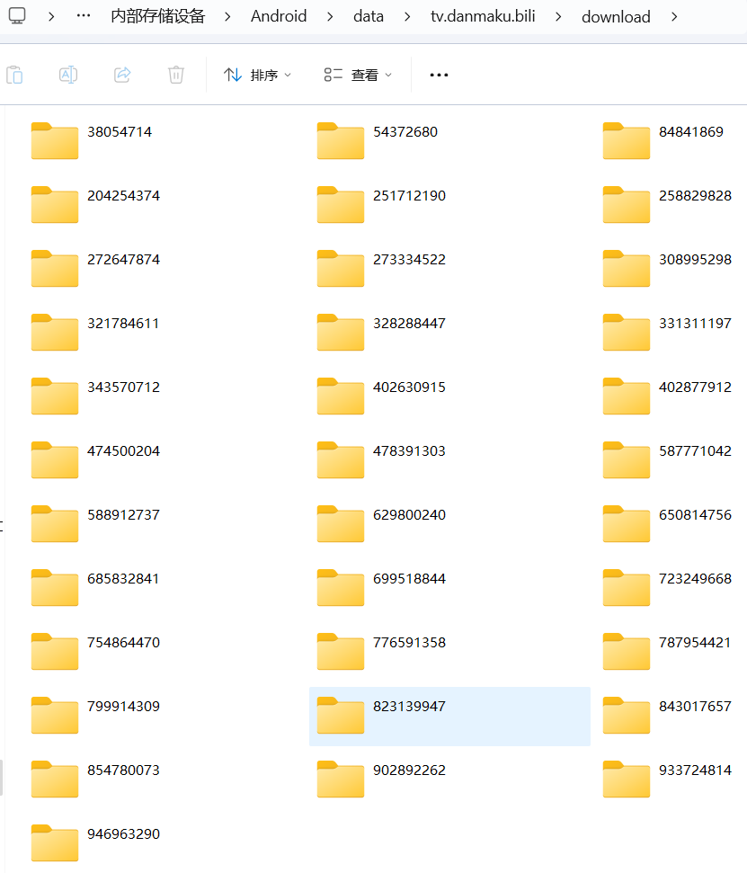
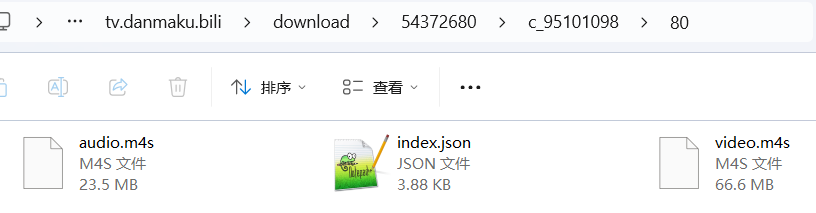
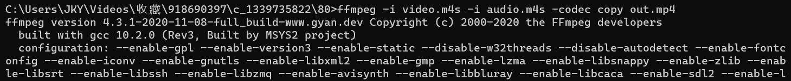
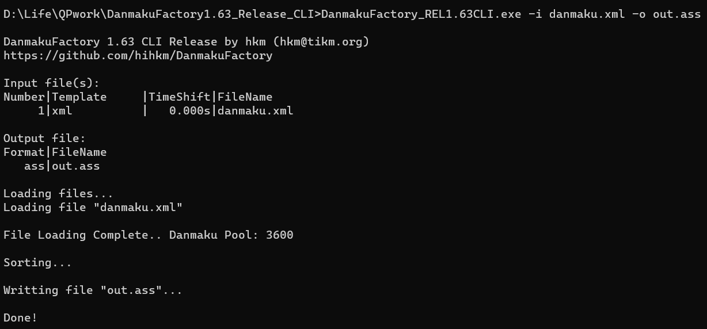
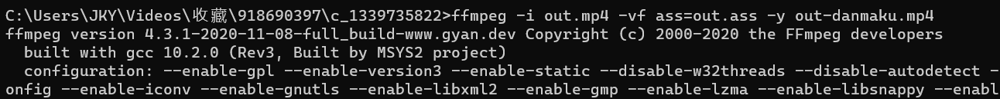
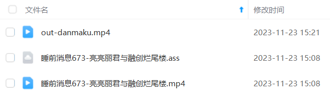

b站app缓存视频提取
b站app缓存文件位置
Android手机端bilibili缓存文件路径：
/sdcard/Android/data/tv.danmaku.bili/download

通过时间排序找到对应文件夹，找到audio.m4s和video.m4s两个分别包含画面信息和音频信息的文件，以及上一层目录的danmaku.xml文件

使用ffmpeg生成mp4
将文件传到PC上使用ffmpeg对video.m4s和audio.m4s进行合并，命令如下：
ffmpeg -i video.m4s -i audio.m4s -codec copy out.mp4

得到输出的mp4视频文件 out.mp4
生成ass弹幕
将xml格式弹幕文件danmaku.xml转换为ass格式
使用DanmukuFactory工具：https://github.com/hihkm/DanmakuFactory
命令如下：
DanmakuFactory_REL1.63CLI.exe -i danmaku.xml -o out.ass

将生成的ass文件与得到的mp4视频文件修改为一致的文件名放至同一目录下，使用potplayer播放器打开mp4视频文件即可看到弹幕。
生成贴片弹幕视频
使用ffmpeg命令：
ffmpeg -i out.mp4 -vf ass=out.ass -y out-danmaku.mp4

视频生成所需时间较长
本文写自提取b站up主“马督工”被下架的第673期睡前消息（11月21日）视频时，内容为亮亮丽君夫妻与融创暴雷
该视频已上传至本人网盘，度盘链接分享：

All articles in this blog are licensed under CC BY-NC-SA 4.0 unless stating additionally.